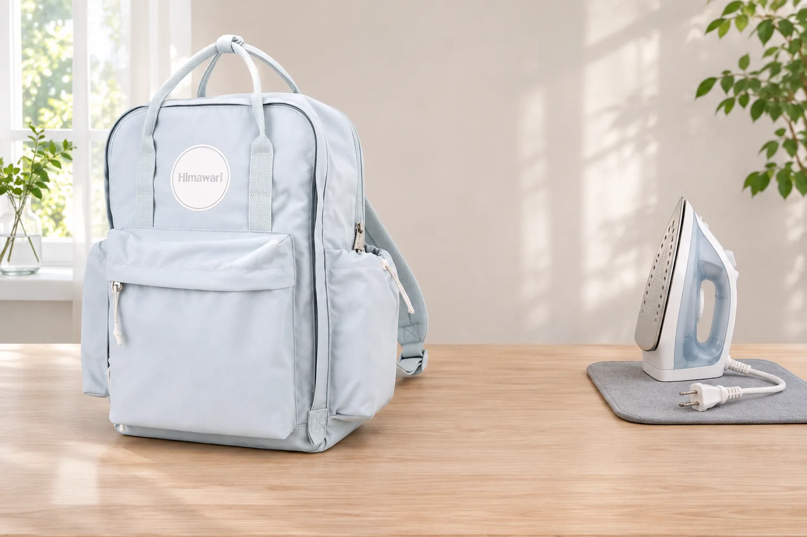
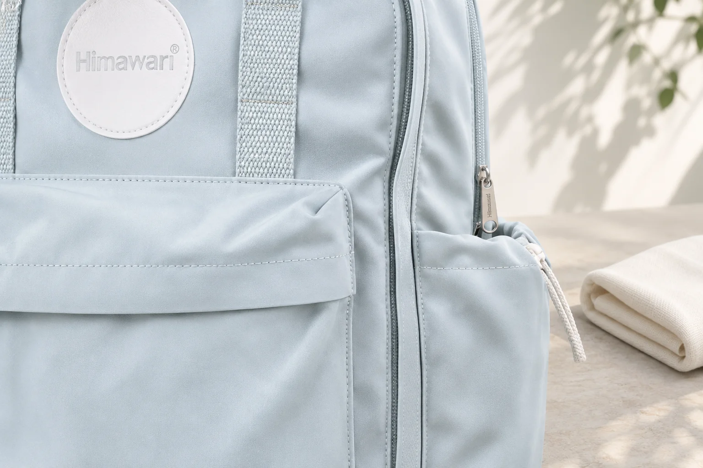
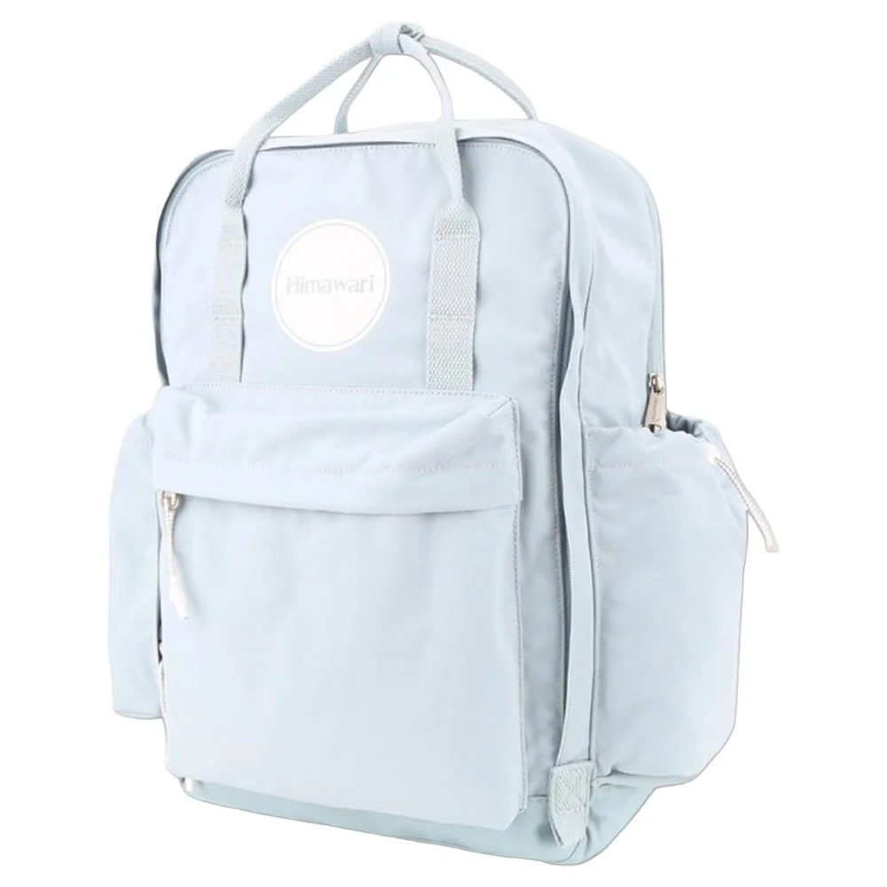

백팩의 접힌 자국, 다리미로 펴도 될까

백팩을 꺼내 놓았는데 몸판 한쪽에 접힌 선이 보입니다. 옷의 주름을 펴듯 다리미를 대면 정리될 것 같지만 가방은 얇은 겉감 한 장으로 놓여 있지 않습니다. 포켓과 손잡이 띠, 로고, 지퍼가 가까이 붙어 있습니다. 선을 발견한 순간과 어떤 처리를 시작할 순간 사이에 제품의 관리 안내를 확인하는 과정이 필요합니다.
예로 살펴볼 가방은 No.1089 블루입니다. 확인된 외부 크기는 가로29.5 × 세로42 × 폭12cm이고 겉감과 안감은 폴리에스터입니다. 공개 관리 안내는 부드러운 천으로 부분 관리한 뒤 그늘에서 건조하고 세탁기와 건조기 사용을 피하라고 설명합니다. 다림질이나 스팀 사용을 허용하는 온도와 시간은 이번 자료에서 확인하지 못했습니다. 이 상태에서 임의의 열처리 방법을 만들지 않습니다.
먼저, 접힌 선이 놓인 곳을 봅니다
가방을 비우고 자연스럽게 놓은 상태에서 선을 찾아봅니다. 넓은 몸판 가운데를 지나는지, 앞주머니의 덮개 옆인지, 손잡이 띠가 박힌 자리인지 구분합니다. No.1089의 실제 사진에는 앞면을 세로로 지나는 두 손잡이 띠와 둥근 로고, 큰 앞주머니가 보입니다. 같은 앞면이어도 천이 넓게 펼쳐지는 부분과 여러 부분이 만나는 자리를 따로 볼 수 있습니다.
주름처럼 보이는 선을 모두 펴야 할 대상으로 묶지는 않습니다. 지퍼 둘레의 선이나 포켓의 원래 가장자리를 접힌 자국과 혼동할 수도 있습니다. 실제 제품 사진에서 같은 위치가 어떻게 보이는지 대조하되 사진의 조명과 가방 안에 짐이 들어 있는 상태는 다를 수 있다는 점도 함께 봅니다. 사진 속 면이 매끈하다는 이유로 현재 가방의 모든 접힘을 이상으로 단정할 수는 없습니다.
선이 언제부터 보였는지 알고 있다면 그 시점도 적어 둡니다. 포장을 열자마자 본 것인지, 짐을 뺀 뒤 눈에 들어온 것인지 구분하는 정도면 됩니다. 원인을 모르는데 압력 때문에 생겼다고 확정하거나, 가방을 특정 시간 세워 두면 사라진다고 약속할 근거는 없습니다. 우선 지금 보이는 위치와 상태를 설명할 수 있도록 기록합니다.

소재 이름이 다림질 온도표는 아닙니다
폴리에스터라는 말은 확인된 섬유 정보입니다. 완성된 No.1089의 모든 부위에 같은 열처리를 적용해도 된다는 안내까지 포함하지 않습니다. 겉감과 안감의 이름이 같아도 포켓의 겹침과 지퍼, 로고를 모두 한 장의 천처럼 취급할 수는 없습니다. 어느 부위를 어떤 조건으로 처리할 수 있는지는 가방 자체의 표시나 제조사 안내에서 찾아야 합니다.
옷에 쓰던 다리미 설정이나 다른 브랜드 가방의 관리법을 가져와 빈칸을 채우지 않습니다. 낮은 온도라면 괜찮다거나 천을 한 장 덮으면 해결된다는 방법도 여기서는 확인된 지침이 아닙니다. 스팀을 직접 대지 않고 멀리서 쐬는 방식 역시 허용 여부를 알기 전에는 대안으로 제시하기 어렵습니다. 거리와 시간을 임의로 정해 시도하기보다 그 방법을 사용할 수 있는지 먼저 묻습니다.
제품 안내에 건조기 사용을 피하라고 적혀 있다는 사실과 다리미에 관한 정보가 없다는 사실도 나누어 읽습니다. 한 도구의 금지 항목으로 다른 도구의 허용 여부를 결정하지 않습니다. 반대로 다리미가 금지 목록에 직접 보이지 않는다고 사용할 수 있다고 해석하지도 않습니다. 명시된 부분 관리·그늘 건조 범위는 유지하고 확인되지 않은 열처리는 별도 질문으로 남깁니다.

먼지인지, 접힘인지에 따라 작업이 달라집니다
접힌 선을 살펴보다 표면에 먼지가 보인다면 주름을 펴는 일과 먼지를 정리하는 일을 구별합니다. 공개 안내에 맞춘 부드러운 천의 부분 관리는 표면을 다루는 방법입니다. 그 방법으로 주름이 펴진다거나 형태가 복원된다는 효과는 안내되어 있지 않습니다. 천으로 강하게 문지르며 선을 없애는 작업으로 확대하지 않고 무엇을 정리하려는지 먼저 정합니다.
물이 필요한 작업인지 판단할 때에도 접힘 자체를 얼룩처럼 취급하지 않습니다. 선을 펴려고 가방 전체를 적시거나 무거운 책으로 눌러 두는 방법은 이번 제품 자료에서 확인한 관리법이 아닙니다. 빈 가방을 자연스러운 상태로 받쳐 현재 모양을 볼 수는 있지만 안을 꽉 채워 원단을 늘리는 것을 관리 목표로 삼지 않습니다. 실제 안내보다 작업 범위를 넓히지 않는 선택입니다.
짧은 관찰 뒤에도 선이 남아 있으면 남았다고 기록하면 됩니다. 언제까지 없어져야 정상이라는 시간을 만들 필요는 없습니다. 사진에서 크게 보인다는 이유만으로 더 강한 도구를 고르는 순서로 넘어가지 않습니다. 선의 변화 여부를 확인하는 일과 그 선을 없앨 수 있는지를 판단하는 일은 별개의 단계입니다.
안내를 받을 때는 위치와 도구를 함께 묻습니다
문의할 때는 No.1089 블루라는 모델·색상과 선이 보이는 부위를 한 문장으로 적을 수 있습니다. 앞주머니 덮개 옆 세로 방향의 접힘처럼 위치가 드러나면 좋습니다. 전체 외형 사진과 그 부위를 가까이 본 사진을 함께 준비하면 어느 면을 말하는지 설명하기 쉽습니다. 조명은 비슷하게 두고 선을 강조하려고 표면을 강하게 잡아당기지는 않습니다.
질문에는 실제 사용하려던 방법도 넣습니다. 다리미를 써도 되는지, 스팀은 가능한지처럼 도구를 구분해서 묻고 허용된다면 적용할 부위와 조건을 확인합니다. 단순히 주름을 펴는 법을 알려 달라고 하는 것보다 답변의 범위를 알기 쉽습니다. 답이 오기 전에는 시험한 것처럼 사진을 만들거나 확인하지 않은 전후 결과를 다른 사람의 사례로 옮겨 쓰지 않습니다.
No.1089의 관리 안내에서 확인한 범위는 부분 관리와 그늘 건조입니다. 접힌 선이 마음에 걸릴 때에도 우선 그 위치가 원래 구조와 어떻게 만나는지 보세요. 제품 사진과 현재 가방을 비교한 다음 열처리 가능 여부를 따로 확인하면 보기 싫은 선을 급히 없애려다 여러 방법을 한꺼번에 적용하는 일을 줄일 수 있습니다.